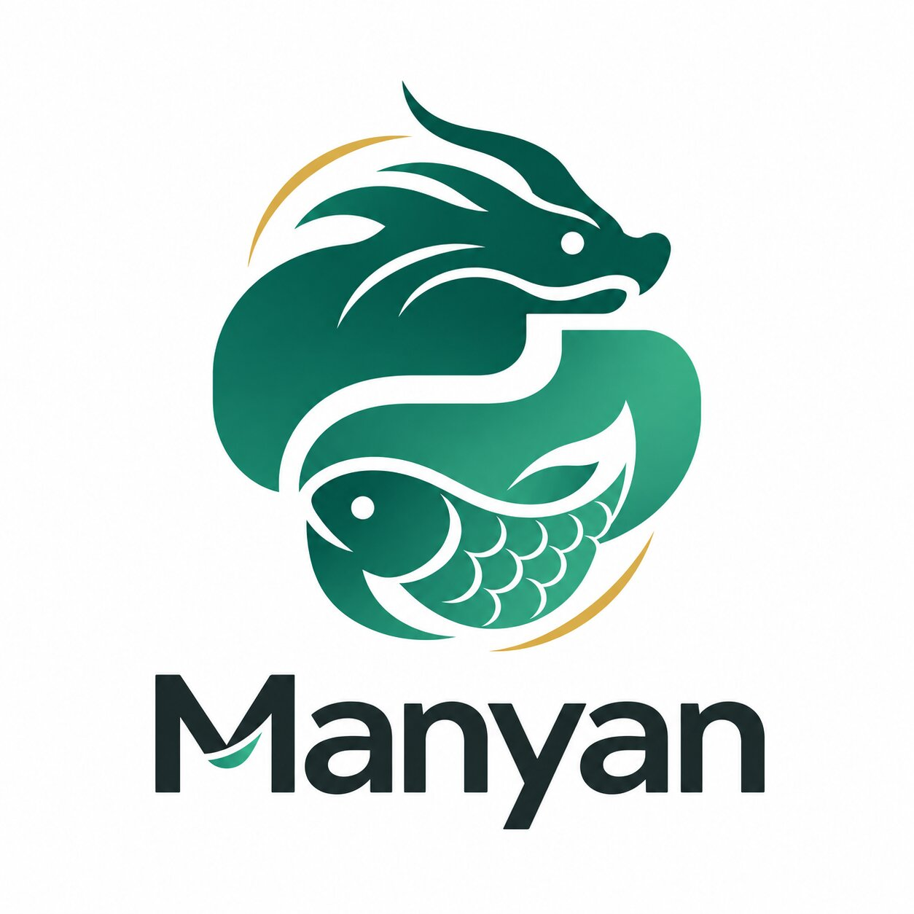

Manyan

A fast model checker for TLA⁺, compatible with TLC and Apalache.
Manyan checks TLA⁺ specifications and model configurations as TLC does, with the same semantics, output and exit statuses, and checks them symbolically and type-checks them as Apalache does, without a JVM. It is an independent implementation in C11, made for fast feedback, predictable results, and embedding in other tools. TLC 1.8.0 and Apalache 0.63.0 are its oracles: every expected output in its tests comes from them.
Try it in your browser, with nothing installed.
Install
pip install manyan # the executable, onto your PATH; or uv tool install manyan
npm install @soasme/manyan # compiled to WebAssembly, for a web page or Node.js
Each release also has
manyan built for macOS, Linux and Windows, and make builds it from
source with a C11 compiler.
Use
$ manyan examples/DieHard
manyan version 0.14.0
Finished computing initial states: 1 distinct state generated.
Error: Invariant NotSolved is violated.
Error: The behavior up to this point is:
State 1: <Initial predicate>
/\ big = 0
/\ small = 0
...
manyan -workers auto SPEC checks with one worker per core; the output is
the same for any number of workers. Scripts and CI written for TLC run it
as they run TLC.
Why Manyan
- Compatible. Default output and exit statuses are tested against TLC; 172 of the 176 models of tlaplus/Examples it checks print what TLC prints (full benchmark). What it leaves out of TLC is left out by decision (limitations).
- Fast. No JVM to start, and checking 5 to 24 times as fast as TLC on the benchmark, 21.8 times on the Examples.
- Parallel, deterministic. Workers merge their results in one worker's order, so the violation and trace reported never change.
- Embeddable. One C file and one header, no dependencies; the C API checks a spec and defines native operators.
Documentation
- Manual: options, configuration, exit statuses, workers, the C API and testing.
- The Manyan TLA⁺ Standard: what Manyan accepts and must print.
- Standard modules: the operators computed natively.
- Roadmap, and the changelog.
- Measurements: benchmark, full benchmark, symbolic benchmark, etcd's trace validation, optimizations, Apalache gaps.
Manyan (曼衍, màn yǎn, said "mahn-yen") comes from Zhuangzi's Qi Wu Lun: “和之以天倪，因之以曼衍.” It evokes continuous unfolding and transformation, as of the states of a system.